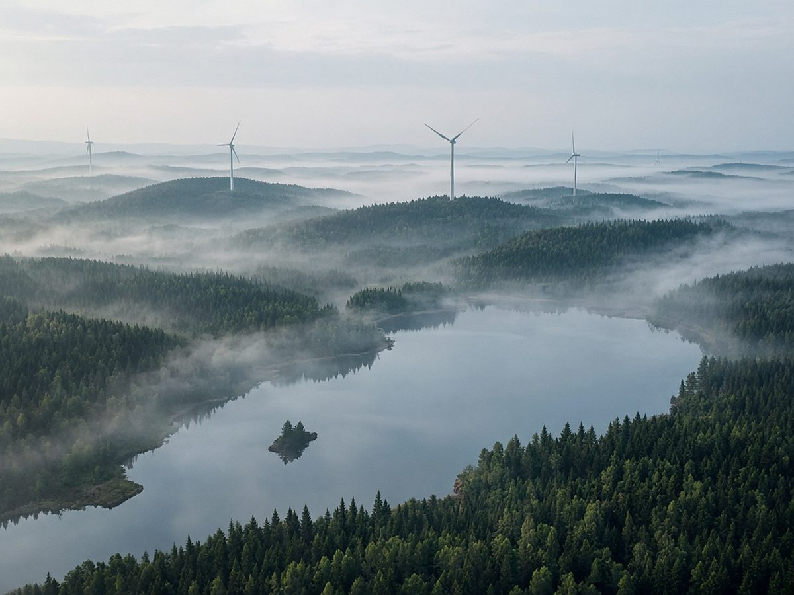
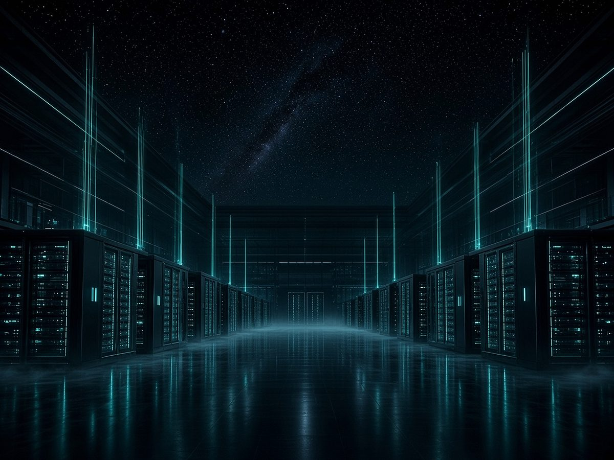
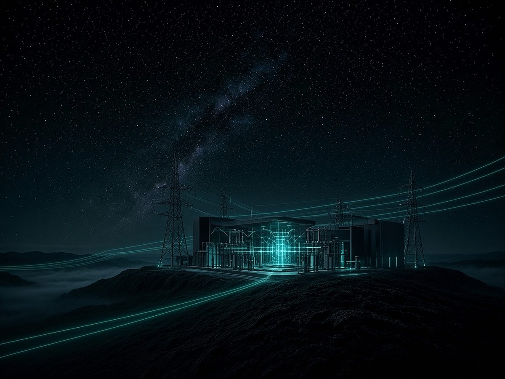

StartFokusfelder
FokusfelderVier Felder. Ein Zusammenhang.
Natürliche Intelligenz ist die Haltung. Nachhaltigkeit ist der Maßstab. Rechenzentren sind das Handlungsfeld. Energieversorger gehören von Anfang an dazu.
Natürliche Intelligenz
Humanisierung zwischen NI und KI. Evolutionäre Intelligenz für Mensch und Natur.
Wir harmonisieren natürliche und künstliche Intelligenz für das Wohl des Menschen und der Natur.
Transcendence 1 Foundation schafft Räume für ethische Verantwortung und einen sinnerfüllten Umgang mit Intelligenz. Sinn und Werte geben Orientierung für die Zukunft.
HIKI beschreibt die Verbindung von menschlicher Urteilsfähigkeit und technologischer Analyse zu einem gemeinsamen Erkenntnissystem.

Nachhaltigkeit
Im Einklang mit der Natur.
Wir handeln für das Wohl des Menschen und im Einklang mit der Natur. Mensch und Natur bilden die Grundlage für eine lebenswerte Zukunft.
In der digitalen Infrastruktur heißt das: Wir fördern nachhaltige und energieeffiziente Infrastruktur – vom Betrieb bis zur Abwärmenutzung.
Wir entwickeln tragfähige Projekte mit langfristiger Perspektive.


Rechenzentren
Rechenzentren werden zu den wichtigsten Infrastrukturprojekten des 21. Jahrhunderts.
Die digitale Souveränität Europas gehört zu den größten wirtschaftlichen und technologischen Herausforderungen der kommenden Jahrzehnte. Der steigende Bedarf an Künstlicher Intelligenz, Cloud-Services und Hochleistungsrechenzentren erfordert neue Infrastrukturen, neue Partnerschaften und neue Investitionsmodelle.
TTC Ventures begleitet diese Entwicklung als strategischer Initiator. Unser Fokus liegt auf der Identifikation, Vernetzung und Entwicklung von Projekten, Unternehmen und Investoren entlang der gesamten Wertschöpfungskette moderner Dateninfrastrukturen.
Wir bringen Unternehmen, Kapital, Technologie und öffentliche Akteure zusammen, um tragfähige Projekte mit langfristiger Perspektive zu entwickeln.

Energieversorger
Wir betrachten nicht nur den Bau von Rechenzentren, sondern das gesamte Ökosystem.
Es reicht von Energieversorgung und Netzinfrastruktur über Grundstücke, Finanzierung und Technologie bis hin zu Betrieb, Abwärmenutzung und den digitalen Anwendungen der Zukunft.
Energieversorgung und Netzinfrastruktur stehen am Anfang dieser Kette. Die Abwärmenutzung steht an ihrem Ende.
Wir bringen Unternehmen, Kapital, Technologie und öffentliche Akteure zusammen.